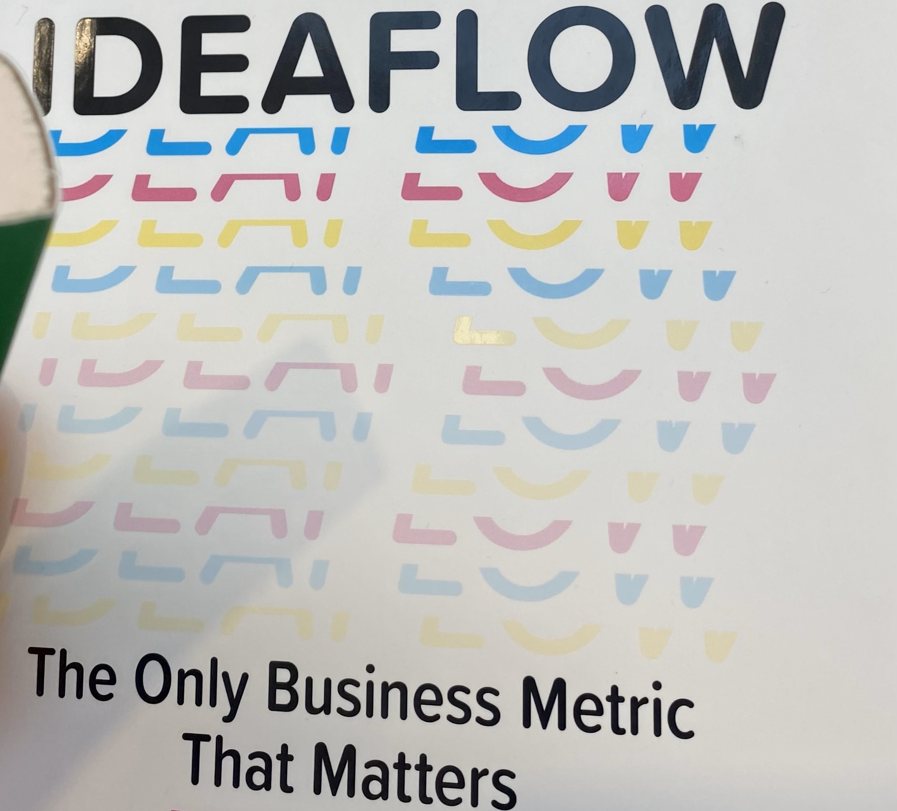

Reflections on the Silicon Valley MBA World Summit
Jan 2, 2024
"There comes a time in every life where the past recedes and the future opens. It's that moment when you turn to face the unknown. Some will turn back to what they already know. Some will walk straight ahead into uncertainty. I can't tell you which one is right. But I can tell you which one is more fun."
The MBA World Summit was a really enjoyable way to visit Silicon Valley. It was great to learn from sessions from MBAs from around the world, learning about new technologies and the different ways things are done in different places. Sessions ranged from exploring SME challenges to interactive discussions about leveraging tools like Chat-GPT. Each speaker was able to bring their specific experience to the topic they were discussing. And speaking to local MBAs was helpful to get a sense of what ideas people are focusing on in the Bay Area.

I also had the opportunity to speak at one of the summit's laboratory sessions. My talk was about how valuable ideas can be found everywhere. That theme, of useful ideas coming from a variety of different places, was clear from the sessions I attended during the summit as people brought new solutions which they had seen be effective in different markets and regions. One common thread that ran through the various talks given was the role of tech as an enabler. In my session, I discussed how technology has not only connected us but has also allowed us to work in ways that were unimaginable just a few years ago. In my talk, I included a quote about the internet by Robert Taylor (who brought together many great teams in Silicon Valley) – "The Internet is not about technology; it's about communication. The Internet connects people who have shared interests, ideas, and needs, regardless of geography". This Robert Taylor quote exemplified the point of my talk, that tech can help bring people together, help groups of people find good ideas and act on these good ideas too.
I picked up a copy of Ideaflow on the trip, a book written by Jeremy Utley and Perry Klebahn (two authors from Stanford's d.school). The book really builds on how ideas can be generated by a team and why idea generation is important. There’s many actionable methods within the book, both for how your team can generate more ideas and act on ideas effectively. I’d recommend it as an excellent resource for anyone interested in fostering creativity and innovation.
Reflecting on the summit months later, I am grateful for the learnings and connections it has provided for the year ahead. I had a really good experience, thanks to the speakers and other attendees making the event so worthwhile!